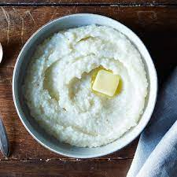

Grits

Grits
Grits are a southern staple in the United States.
They can be paired with a variety of foods or by themselves.
Grits are a quick and easy food.
Ingredients
- Grits
- Butter
- Water
- Cheese (I prefer sharp cheddar)
- Salt
- Pepper
Instructions
- Put 1 1/2 cups of water in a pot to boil.
- Once boiling add 1/4 cups of grits to water.
- Turn heat down to simmer.
- Add salt while grits simmer for 5 minutes.
- Stir occasionally.
- After 5 minutes are up add a 1/2 cup of cheese.
- Stir until melted.
- Remove from heat and serve.